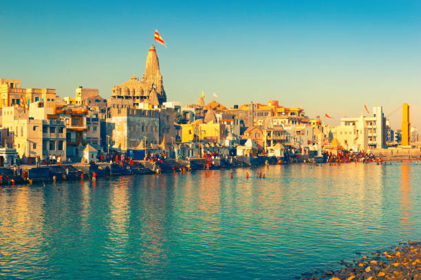
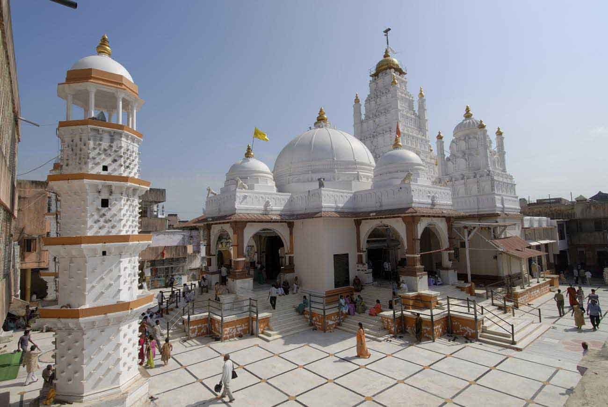
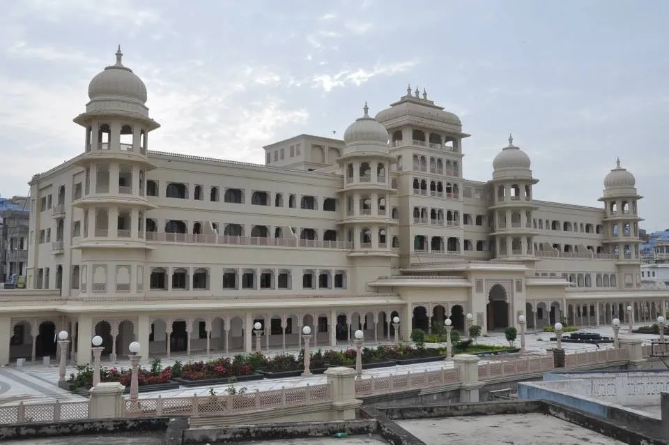
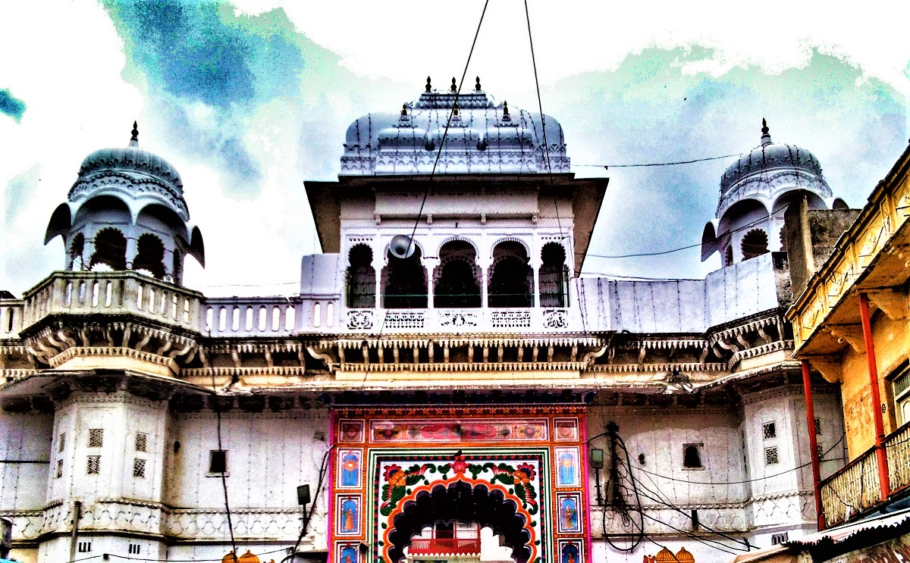

Panch Dwarka
The Panch Dwarka temples refer to the five main temples dedicated to Lord Krishna, collectively known as the Pancha (or Panch) Dwarka. These temples are located in different regions of India and hold great significance in Hindu mythology and devotion. Each temple is associated with a specific event or aspect of Lord Krishna's life.

City:-Dwarka
State:- Gujarat
This temple is believed to be the main Dwarka, also known as the Jagat Mandir or Dwarkadhish Mandir. It is considered the residence of Lord Krishna during his reign as the king of Dwarka. The temple is one of the prominent Char Dham pilgrimage sites and attracts a large number of devotees.

City:-Bet Island
State:-Gujarat
Bet Dwarka is believed to be the place where Lord Krishna's capital city of Dwarka once stood. The temple on the island is dedicated to Lord Krishna and is a significant pilgrimage site.

City:-Dakor
State:-Gujarat
It is dedicated to Lord Krishna, specifically in his form as Ranchhodrai. This temple is considered highly sacred, and devotees visit to seek the blessings of Lord Krishna.

City:- Nathdwara
State:-Rajasthan
It is a special temple dedicated to Lord Krishna in his child form, known as Shrinath Ji. The temple is famous for its beautiful design and is a significant place for people who follow Lord Krishna.

Kankroli Dwarkadhish Temple
City:- Kankroli
State:- Rajasthan
It is a temple dedicated to Lord Krishna, specifically in his form as Dwarkadhish. This temple holds great significance for devotees of Lord Krishna and is a place where people come to worship and seek blessings. The temple is known for its architectural beauty and is considered a sacred place for followers of Lord Krishna.